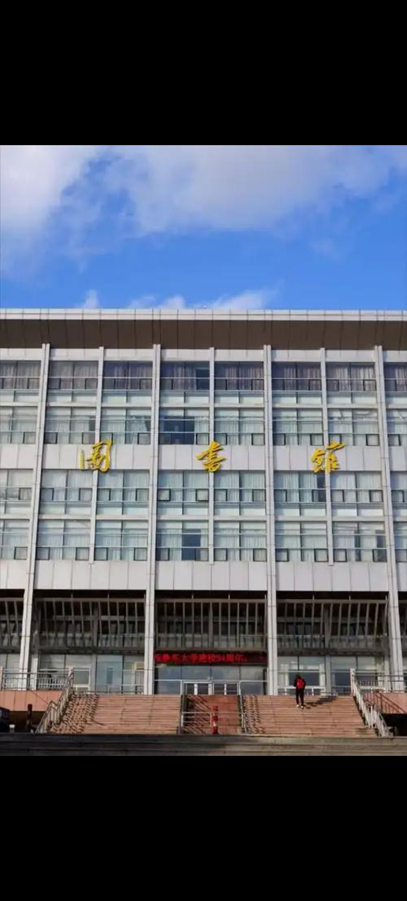
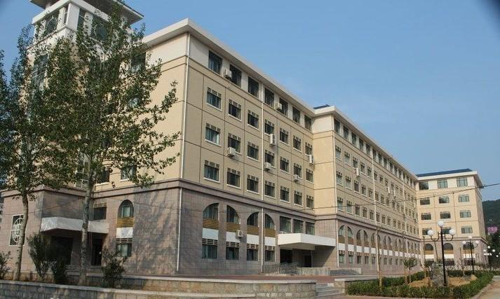
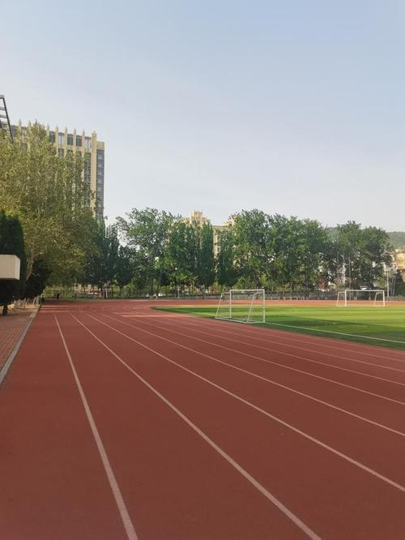

春风拂过校园的檐角，融去了最后一丝料峭寒意，枝头的花苞次第舒展，粉白的海棠、嫩黄的迎春簇拥着回廊，晕开一片温柔的春色。 操场边的垂柳抽出新绿，柔枝随风轻摆，倒映在澄澈的池水之中。阳光穿过枝叶的缝隙，在石板路上洒下斑驳的光影，三三两两的学子捧着书本漫步其间，笑语混着草木的清香漫延开来。 草坪上冒出鲜嫩的草芽，蝴蝶绕着花丛翩跹，连教学楼旁的梧桐都焕发生机，嫩绿的新叶层层叠叠，将春日的生机铺满整个校园，处处皆是蓬勃与明媚。


